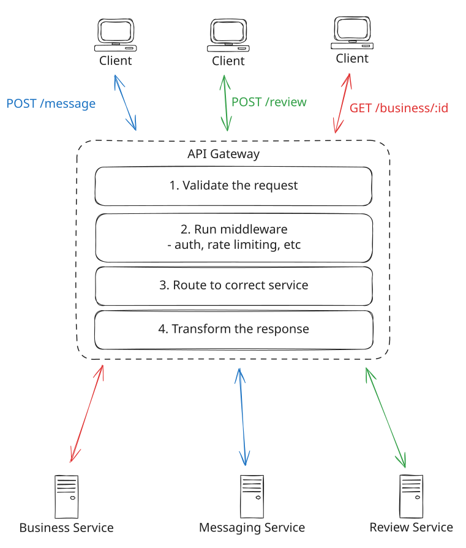

Key Technologies
API Gateway
Learn when and how to effectively incorporate API Gateways into your system design interviews.
What is an API Gateway?
There's a good chance you've interacted with an API Gateway today, even if you didn't realize it. They're a core component in modern architectures, especially with the rise of microservices.
Think of it as the front desk at a luxury hotel. Just as hotel guests don't need to know where the housekeeping office or maintenance room is located, clients shouldn't need to know about the internal structure of your microservices.
An API Gateway serves as a single entry point for all client requests, managing and routing them to appropriate backend services. Just as a hotel front desk handles check-ins, room assignments, and guest requests, an API Gateway manages centralized middleware like authentication, routing, and request handling.
The evolution of API Gateways parallels the rise of microservices architecture. As monolithic applications were broken down into smaller, specialized services, the need for a centralized point of control became evident. Without an API Gateway, clients would need to know about and communicate with multiple services directly – imagine hotel guests having to track down individual staff members for each request.
API gateways are thin, relatively simple components that serve a clear purpose. In this deep dive, we'll focus on what you need to know for system design interviews without overcomplicating things.
Core Responsibilities
The gateway's primary function is request routing – determining which backend service should handle each incoming request. But this isn't all they do.
Funny enough, I'll often have candidates introduce a gateway in a system design interview and emphasize that it will do all this middleware stuff but never mention the core reason they need it -- request routing.
Nowadays, API gateways are also used to handle cross-cutting concerns or middleware like authentication, rate limiting, caching, SSL termination, and more.
Tracing a Request
Let's walk through a request from start to finish. Incoming requests come into the API Gateway from clients, usually via HTTP but they can be gRPC or any other protocol. From there, the gateway will apply any middleware you've configured and then route the request to the appropriate backend service.
- Request validation
- API Gateway applies middleware (auth, rate limiting, etc.)
- API Gateway routes the request to the appropriate backend service
- Backend service processes the request and returns a response
- API Gateway transforms the response and returns it to the client
- Optionally cache the response for future requests
Let's take a closer look at each step.

API Gateway Request Flow
1) Request Validation
Before doing anything else, the API Gateway checks if incoming requests are properly formatted and contain all the required information. This validation includes checking that the request URL is valid, required headers are present, and the request body (if any) matches the expected format.
This early validation is important because it helps catch obvious issues before they reach your backend services. For example, if a mobile app sends a malformed JSON payload or forgets to include a required API key, there's no point in routing that request further into your system. The gateway can quickly reject it and send back a helpful error message, saving your backend services from wasting time and resources on requests that were never going to succeed.
2) Middleware
API Gateways can be configured to handle various middleware tasks. For example, you might want to:
- Authenticate requests using JWT tokens
- Limit request rates to prevent abuse
- Terminate SSL connections
- Log and monitor traffic
- Compress responses
- Handle CORS headers
- Whitelist/blacklist IPs
- Validate request sizes
- Handle response timeouts
- Version APIs
- Throttle traffic
- Integrate with service discovery
Of these, the most popular and relevant to system design interviews are authentication, rate limiting, and ip whitelisting/blacklisting. If you do opt to mention middleware, just make sure it's with a purpose and that you don't spend too much time here.
My suggestion when introducing a API Gateway to your design is to simply mention, "I'll add a API Gateway to handle routing and basic middleware" and move on.
3) Routing
The gateway maintains a routing table that maps incoming requests to backend services. This mapping is typically based on a combination of:
- URL paths (e.g., /users/* routes to the user service)
- HTTP methods (e.g., GET, POST, etc.)
- Query parameters
- Request headers
For example, a simple routing configuration might look like:
routes:
- path: /users/*
service: user-service
port: 8080
- path: /orders/*
service: order-service
port: 8081
- path: /payments/*
service: payment-service
port: 8082The gateway will quickly look up which backend service to send the request to based on the path, method, query parameters, and headers and send the request onward accordingly.
4) Backend Communication
While most services communicate via HTTP, in some cases your backend services might use a different protocol like gRPC for internal communication. When this happens, the API Gateway can handle translating between protocols, though this is relatively uncommon in practice.
The gateway would, thus, transform the request into the appropriate protocol before sending it to the backend service. This is nice because it allows your services to use whatever protocol or format is most efficient without clients needing to know about it.
5) Response Transformation
The gateway will transform the response from the backend service into the format requested by the client. This transformation layer allows your internal services to use whatever protocol or format is most efficient, while presenting a clean, consistent API to clients.
For example:
// Client sends a HTTP GET request
GET /users/123/profile
// API Gateway transforms this into an internal gRPC call
userService.getProfile({ userId: "123" })
// Gateway transforms the gRPC response into JSON and returns it to the client over HTTP
{
"userId": "123",
"name": "John Doe",
"email": "john@example.com"
}6) Caching
Before sending the response back to the client, the gateway can optionally cache the response. This is useful for frequently accessed data that doesn't change often and, importantly, is not user specific. If your expectation is that a given API request will return the same result for a given input, caching it makes sense.
The API Gateway can implement various caching strategies too. For example:
- Full Response Caching: Cache entire responses for frequently accessed endpoints
- Partial Caching: Cache specific parts of responses that change infrequently
- Cache Invalidation: Use TTL or event-based invalidation
In each case, you can either cache the response in memory or in a distributed cache like Redis.
Scaling an API Gateway
When discussing API Gateway scaling in interviews, there are two main dimensions to consider: handling increased load and managing global distribution.
Horizontal Scaling
The most straightforward approach to handling increased load is horizontal scaling. API Gateways are typically stateless, making them ideal candidates for horizontal scaling. You can add more gateway instances behind a load balancer to distribute incoming requests.
While API Gateways are primarily known for routing and middleware functionality, they often include load balancing capabilities. However, it's important to understand the distinction:
- Client-to-Gateway Load Balancing: This is typically handled by a dedicated load balancer in front of your API Gateway instances (like AWS ELB or NGINX).
- Gateway-to-Service Load Balancing: The API Gateway itself can perform load balancing across multiple instances of backend services.
This can typically be abstracted away during an interview. Drawing a single box to handle "API Gateway and Load Balancer" is usually sufficient. You don't want to get bogged down in the details of your entry points as they're more likely to be a distraction from the core functionality of your system.
Global Distribution
Another option that works well particularly for large applications with users spread across the globe is to deploy API Gateways closer to your users, similar to how you would deploy a CDN. This typically involves:
- Regional Deployments: Deploy gateway instances in multiple geographic regions
- DNS-based Routing: Use GeoDNS to route users to the nearest gateway
- Configuration Synchronization: Ensure routing rules and policies are consistent across regions
Popular API Gateways
Let's take a look at some of the most popular API Gateways.
Managed Services
Cloud providers offer fully managed API Gateway solutions that integrate well with their ecosystems. This is by far the easiest option but also the most expensive.
-
- Seamless integration with AWS services
- Supports REST and WebSocket APIs
- Built-in features like:
- Request throttling
- API keys and usage plans
- AWS Lambda integration
- CloudWatch monitoring
-
- Strong OAuth and OpenID Connect support
- Policy-based configuration
- Developer portal for API documentation
-
- Deep integration with GCP services
- Strong gRPC support
- Automatic OpenAPI documentation
Open Source Solutions
For teams wanting more control or running on-premises:
-
- Built on NGINX
- Extensive plugin ecosystem
- Supports both traditional and service mesh deployments
-
- Native support for GraphQL
- Built-in API analytics
- Multi-data center capabilities
-
- JavaScript/Node.js based
- Lightweight and developer-friendly
- Good for Node.js microservices
When to Propose an API Gateway
Ok cool, but when should you use an API Gateway in your interview?
The TLDR is: use it when you have a microservices architecture and don't use it when you have a simple client-server architecture.
With a microservices architecture, an API Gateway becomes almost essential. Without one, clients would need to know about and communicate with multiple services directly, leading to tighter coupling and more complex client code. The gateway provides a clean separation between your internal service architecture and your external API surface.
However, it's equally important to recognize when an API Gateway might be overkill. For simple monolithic applications or systems with a single client type, introducing an API Gateway adds unnecessary complexity.
I've mentioned this throughout, but I want it to be super clear. While it's important to understand every component you introduce into your design, the API Gateway is not the most interesting. There is a far greater chance that you are making a mistake by spending too much time on it than not enough.
Get it down, say it will handle routing and middleware, and move on.
Test Your Knowledge
Answer the question below to find your gaps.
Question 1 of 15
What is the primary function of an API Gateway?
1
User interface rendering and client-side hydration
2
Routing requests to backend services
3
Data storage and persistence
4
Database query optimization